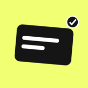

Lazy Notepad
Tap anywhere. Start writing.
Privacy Policy
Lazy Notepad · Last updated: October 2026
Lazy Notepad does not collect, sell or share your personal information.
Your notes
Notes are stored on your device. If you are signed in with Apple and iCloud is enabled, they are also stored in your private iCloud account so they can sync between your devices. We cannot access them.
Location
If you grant permission, your approximate location is used on your device only, to show your nearest city next to the date. It is not stored on our servers.
Subscriptions
Lazy Pro purchases are handled entirely by Apple. We do not receive your payment details.
No tracking
Lazy Notepad has no ads, no analytics and no third-party tracking.
Children
The app does not knowingly collect any information from anyone, including children.
Changes
If this policy changes, the updated version will be posted on this page with a new date.
Contact
Questions: github.com/nikhil3458/lazynotepad/issues